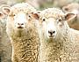
Sheep

Ingredients

Search
CloveGarden
SAFARI
Users
|
|
|
| Shoulder #206 |
|
|---|
|
Shoulder |
Roast |
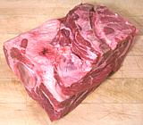
This is the sheep equivalent of the beef
chuck roast, but goes lower and includes the sholder joint and part of
the leg bone (left in photo). The photo specimen was 7 inches long, 5
inches wide, 4 inches thick and weighed 2.8 pounds. This cut has a
complex bone structure and some rather large fat deposites.
|
|---|
|
Steak |
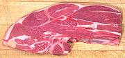
This is the sheep version of the beef 7 bone steak, complete with a 7
shaped slice of the shoulder blade. It is sliced from the Lamb Shoulder
Roast. The photo specimen was 8 inches long, 3-1/2 inches wide, 3/4 inch
thick and weighed 8-1/2 ounces.
|
| Rack #204 |
Officially, this primal cut is both sides as a saddle, but in markets its
generally sold by the side. To many Americans this is the most desirable
part of the lamb - used in many of the fanciest classic lamb recipes.
It's also very much the most expensive especially since there isn't all that
much meat on it.
|
|---|
| Rack |
Whole Rack of Lamb |
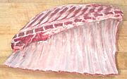
The photo specimen was 12-1/2 inchs long, 8 inches wide and weighed 2 pounds
9 ounces.
|
|---|
| Lamb Chops |
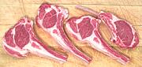.
These chops will be of varying size and meatiness due to position in the
rack. Note that the feather bones (above the spine) are removed as is
the outer layer of fat and miscellaneous bones.
|
| Loin #231 |
The Lamb Loin is generally sold as a half loin (the full primal cut is a
saddle including both sides) and is "trimmed" by removal of the flank,
which is rather small in any case and mostly tough membranes.
|
|---|
| Loin Trimmed |
Whole |
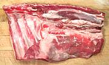
This is a fairly meaty cut and sells at a higher price than some other lamb
cuts. The photo specimen, purchased at a multi-ethnic market in Los Angeles,
conforms to neither Style A (13th rib only) or Style B (no rib) in having
ribs 11 12 and 13. It was 11 inches by 6 inches and weighed 2.1 pounds.
Cut to Style A it would have been 1 pound 11 ounces, 9 inches by 6 inches.
The short loin part of the tenderlon can be seen in the upper right.
|
|---|
| Lamb Loin Chops |
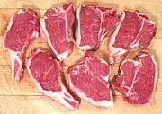.
The loin may include 1 to 3 ribs which are not proper loin chops (the
photo shows two rib chops on the left). The loin chops are quite meaty,
containing only a thin T-shaped bone. Actually, they are mineature
T-Bone and Porterhouse steaks.
|
| Sirloin #234G |
This cut exists only with cutting Style B, In Style A it's part of the Leg.
U.S. Lamb is generally cut to Style A unless specifically ordered as
Style B, generally by an institutional buyer or restaurant |
|---|
| Leg #233 |
Leg of Lamb is prized everywhere lamb is eaten. It is highly popular in
France, and the French will pay a good price. This often results in good
prices for other parts of the lamb in England, Scotland and Wales, The
legs having all been shipped to France. |
|---|
| Lamb Leg, Whole |
|
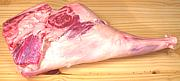
The leg shown is "shank on", but that's optional with the meat cutter.
This leg was 21 inches long, 11 inches wide, 4-1/2 inches thick and
wighed 11-1/2 pounds. |
|---|
| Breast #209 |
This is the lamb equivalent of pork spare ribs, cut from the front of the
sholder back to the division between rack and loin, and from mid-rib to
keel. |
|---|
| Beast, Whole |
|
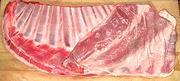
While in position this cut is the equivalent of pork spare ribs, it is
otherwise not so equivalent. Those who have chosen a religion that forbids
pig will mercifully never know how severely they are being punished. |
|---|
| Foreshank #210 |
|
|---|
|
Shanks |
|
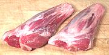
Lamb shanks are popular in all lamb eating cultures. The meat is flavorful
and there's plenty of connective tissue to make good soups. The photo
specimens were 7 inches long, 2-1/2 inches wide and 1-3/4 inches thick at
the big end. They weighed 11-1/2 ounces each.
|
|---|
| Other Cuts |
While these unnumbered cuts are not normal to American supermarkets, they
are very popular in some other countries. Here in Southern California they
are all easily available from ethnic markets. |
|---|
| Head |
|
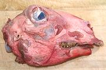
Lamb heads are a prized delacy in the cuisines of the Middle East,
Turkey, Armenia and the Stans. American military personnel in Iraq who've
asked for a "real authentic Iraqi dinner" generally regret their request
as dinner stares back at them while the Iraqis beam with pride at the fine
fare they have provided. Lamb head is also quite popular in Norway.
|
|---|
| Neck |
|
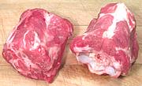
Lamb Necks are useful for stews and the like. The meat is fairly dark and
flavorful, and there is little fat. The photo specimens were
4 inches long, 2-1/2 inches high and 3 inches across and weighed 1 pound
each. Each of these chunks contained two neck bones.
Keep in mind, if using an English recipe that uses the traditional
English lamb cuts, "neck" means something quite different. See the
English Lamb Chart.
|
|---|
Mutton
Chunks |
|
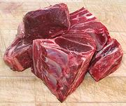
Here in Southern California, Mutton is often cut into chunks, similar
to how Goat is often cut, but into larger chunks. Most mutton available
here is imported frozen from Australia or New Zealand. The photo
specimens were about 50% bone, but quite low in fat.
|
|---|
| Feet |
|
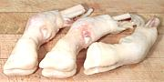
Lamb feet are used mainly to add substance to soups and stews. They appear
in recipes from regions where cows can't be economically raised and pigs
are forbidden (or way too expensive to raise). The photo specimens, from
New Zealand, were 6-1/2 inches long and weighed 4.9 ounces each.
|
|---|
| Fat |
|
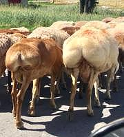
In regions where people adhere to a religion that forbids lard, the
best they can do is sheep fat. For this purpose special breeds of
sheep are raised that store large amounts of fat in their tails and/or
rumps. This fat is considered of much higher quality than that found
on other parts of a sheep. This fat is very important for frying and
inclusion in recipes in the Middle East, Pakistan and Central Asia.
These breeds are not raised on a commercial scale in North America,
so here we must use fat from other parts of the sheep.
Photo by Amir264 distributed under licese
Creative Commons
Attribution-ShareAlike v4.0 International.
|
|---|
| Innards |
In traditional agricultural regions, all edible parts of an animal are eaten,
including internal organs. These are different in taste and texture from
muscle meats and some are highly prized and expensive. Most Americans,
however, are unfamiliar with them and how they are used, so innards tend
to be rather economical here. |
|---|
|
Tongue |
|
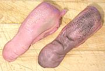
Lamb tongues are eaten by pretty much every culture where lamb is a
significant item in the diet. They are sometimes pickled. The photo
specimens, packed in a tray of 6, were 5 inches long and weighed 2.7 ounces
each. |
|---|
|
Kidneys |
|
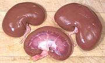
Lamb kidneys are eaten by pretty much every culture where lamb is a
significant item in the diet. They are similar in size, shape and taste,
and are generally interchangeable with pig kidneys (unless you're a
Muslim or observant Jew). The photo specimens were 3-3/4 inches long
and weighed 3-3/4 ounces each. |
|---|
|
Liver |
|
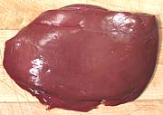
As with the livers of other meat animals, lamb liver is usually cooked
with onions. The photo specimen was 0.7 pound, 7 x 5 x 7/8 inches. |
|---|
| Heart |
|
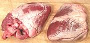
Lamb hearts are eaten by pretty much every culture where lamb is a
significant item in the diet. The meat is dark and tough, so needs long
cooking (4 hrs simmering). The photo specimens were 4-1/4 x 3 x 2
inches and wighed 10-3/4 ounces, a significant part of which is hard
fat. Pig hearts are larger, cheaper and much less fatty, but forbidden
by Islam and Judaism. |
|---|
Spleen
(Melts) |
|
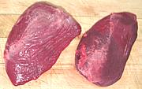
These are usually labeled "Lamb Melts" in the markets to avoid the
rather anatomical "Spleen". It is most used in North African cooking,
but also anywhere sheep and goat are feature meats. The larger of the
two photo specimens (front and back) was 6-1/2 inches long, 4 inches
wide and 1 inch thick, weighing 5-1/2 ounces.
. |
|---|
Lungs
(Lights) |
|
Lungs are called for in some recipes, most notabley for Scottish Haggis,
as well as some recipes originating from the Middle East, "The Stans" and
North Africa. It is, however, illegal to sell lungs in the U.S. so they
must be done without, unless you slaughter your own lamb. |
|---|
| Tripe |
|
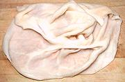
Lamb tripe is much thinner than beef but may take as long to cook depending
on desired texture. The photo specimen was about 13 inches by 10 inches and
weighed 1 pound, but they may be up to about 1-1/2 pounds.
|
|---|
| Brains |
|
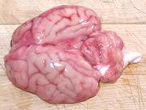
Lamb brains are eaten in most lamb growing regions, but have not
been easy to find here in Southern California (which is not much of a
lamb growing region). In Autumn 2013 I did find some, imported from
Australia, packaged in individual plastic bags arranged six to a foam
tray. Typically, they were 3 inches wide by 3-1/2 inches long and
weighed 3-1/4 ounces each.
subst: Sweetbreads are considered a superior substitute. |
|---|
| Sweetbreads |
|
Lamb sweetbreads are particularly popular in Latin America and Turkey.
There are two types, usually served together. Throat Sweetbreads (thymus)
are cylindrical in shape while the Heart Sweetbreads (pancreas) are
roughly spherical. I have yet to see them here in Southern California
where even cow sweetbreads are not common. |
|---|
Testicles
Lamb fries |
|
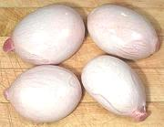
Lamb testicles are well regarded by non-squemish eaters. they are
generally shipped frozen from Australia or New Zealand. The photo
specimens were purchased from a multi-ethnic market in Los Angeles,
(Altadena) just under 1-1/2 pounds packed in a foam tray of 5. The
largest was 3-1/2 inches long, 2-1/2 inches diameter and weighed 5-7/8
ounces. The smallest was 3-1/4 inches long, 2 inches diameter and
weighed 3-5/8 ounces. |
|---|
Links
|